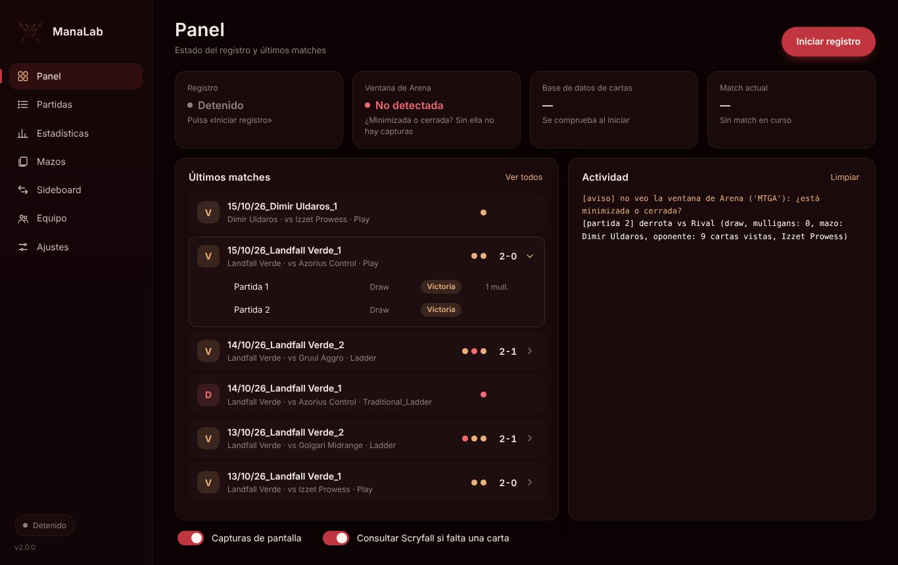
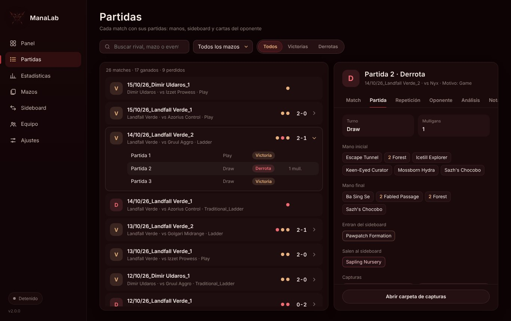
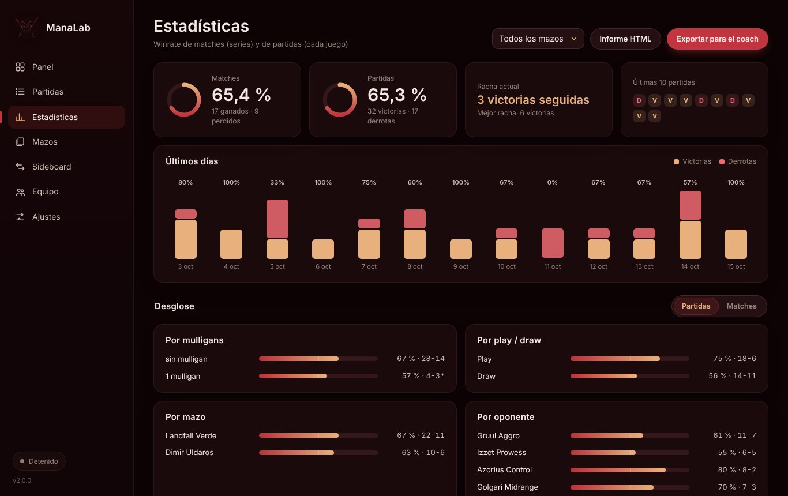

Guía de ManaLab
Qué hace cada parte de la app y cómo usarla. Especialmente las funciones principales y el coach IA.
Qué es ManaLab
ManaLab guarda cada partida que juegas en MTG Arena en tu PC y te enseña qué funciona: tus porcentajes por mazo, por rival y por matchup, tus mulligans, tus errores y tus cambios de sideboard.
La app es gratis. Lo único de pago es el análisis de derrotas con IA: 5 € al mes.
Primeros pasos
- Descarga la versión portable (ZIP), descomprímela y abre ManaLab. No necesita instalación.
- En Arena, ve a Opciones › Cuenta y activa «Detailed Logs (Plugin Support)». Después reinicia Arena. Sin esto ManaLab no puede leer tus partidas.
- La primera vez se abre la guía de inicio. Puedes volver a verla en Ajustes › Acerca de.
- En el Panel pulsa «Iniciar registro». A partir de ahí cada partida queda guardada sola.
Panel: el estado del registro
El Panel te dice si ManaLab está registrando bien. Tiene cuatro tarjetas:
- Registro: si está activo o detenido.
- Ventana de Arena: si ManaLab ve la ventana de Arena (hace falta para las capturas).
- Base de datos de cartas: si tiene las cartas al día.
- Match actual: la partida que se está jugando ahora.
Debajo ves tus últimos matches y la actividad reciente.

Partidas: tus matches
Aquí está todo el historial. Puedes buscar por rival, mazo o evento, y filtrar por Todos, Victorias o Derrotas. Al abrir un match ves estas pestañas:
- Match: el resumen del match y sus partidas.
- Partida: mano inicial, turno en que empezaste, mulligans y lo que pasó.
- Repetición: la partida paso a paso, turno a turno.
- Oponente: las cartas del rival que has visto.
- Análisis: la explicación con IA (solo suscriptores).
- Notas: tus errores y tus notas.


Vídeo en la web: https://manalab.es/guia/guia_manalab_es.html#video-replay

Vídeo en la web: https://manalab.es/guia/guia_manalab_es.html#video-opening-hand-mulligans

Vídeo en la web: https://manalab.es/guia/guia_manalab_es.html#video-opponent
Importar partidas
En Partidas, «Importar…» trae partidas de dos sitios: un archivo .manalab que te pase otra persona (lo crea «Exportar partida» en el menú «⋯» de cada partida) o un Player.log de Arena con partidas que jugaste con ManaLab cerrado o en otro PC.
Eliges qué partidas importar y las que ya tienes quedan marcadas, así que no se duplican. Las importadas tienen repetición, manos, mulligans, mazo, notas y etiquetas del coach, pero no capturas ni análisis con IA.
Las partidas de otro jugador llevan su marca y nunca cuentan en tus estadísticas, tendencias, informes ni en el equipo. Las que importas de tu propio log sí cuentan como tuyas.

Vídeo en la web: https://manalab.es/guia/guia_manalab_es.html#video-import-games
Momentos destacados
Durante la partida puedes guardar una captura del momento que quieras. Funciona aunque tengas apagadas las capturas automáticas.
- Pulsa F8 (puedes cambiar la tecla en Ajustes › Momentos destacados).
- O pulsa el botón «Capturar momento» que aparece arriba a la izquierda de Arena.
- O pulsa «Capturar momento» en la barra lateral de ManaLab.
Los botones solo aparecen mientras hay una partida en curso. La captura se guarda con la mano inicial y los mulligans.
Después, en la pestaña Partida, abre la captura y escribe una nota sobre ese momento.

Vídeo en la web: https://manalab.es/guia/guia_manalab_es.html#video-capture-moment
Notas y errores
En la pestaña Notas de cada partida marcas los errores que cometiste (con etiquetas) y escribes lo que quieras recordar. Estos errores son la base del informe que puedes enviar a tu coach y de las estadísticas de errores repetidos.
Mazos
Aquí aparecen los mazos que ManaLab ha detectado. Desde esta pantalla puedes:
- Cambiar el nombre del mazo o usar el que tiene en Arena.
- Corregir el arquetipo si ManaLab lo ha clasificado mal, y reclasificar partidas.
- Comprobar cómo encaja tu mazo en el meta.
Estadísticas: tus porcentajes
Tus resultados organizados por:
- Mazo.
- Oponente.
- Mulligans.
- Play / draw.
- Últimos días.
La tabla de matchups te dice con qué mazos ganas y con cuáles pierdes. Desde aquí también puedes exportar tus datos para tu coach.


Vídeo en la web: https://manalab.es/guia/guia_manalab_es.html#video-statistics
Sideboard: tu plan por matchup
Para cada matchup puedes apuntar qué metes (Meto) y qué sacas (Saco), y escribir tu plan (Mi plan). ManaLab también muestra cómo te han ido tus cambios anteriores.
Con suscripción, «Pedir plan a la IA» te propone un plan de sideboard basado en tus partidas de ese matchup.

Vídeo en la web: https://manalab.es/guia/guia_manalab_es.html#video-sideboard-guide
Coach IA: análisis de derrotas
El coach IA explica qué salió mal en una derrota y qué probar la próxima vez. Es solo para suscriptores: 5 € al mes.
- Suscríbete en Ko-fi (botón «Suscribirme en Ko-fi» en Ajustes o en la pestaña Análisis). Recibirás un código por correo.
- Ve a Ajustes › Análisis con IA, pega el código en «Código de suscripción» y guarda.
- Abre una derrota en Partidas y ve a la pestaña Análisis.
- Si quieres, escribe una pregunta concreta, por ejemplo: «¿debí hacer mulligan?» o «¿ataqué mal en el turno 5?».
- Pulsa «Analizar con IA». Tarda unos segundos. La respuesta queda guardada, así que no pagas dos veces por la misma partida.
Cada código tiene un límite diario (30 análisis al día por defecto). Ves cuántos te quedan en la pestaña.
Solo se envían los datos de la partida que analizas: mazo, manos, sideboard, cartas vistas y la cronología de la partida. No se envían tu nombre, el de tu rival ni el archivo de registro completo.
Exportar para el coach y Equipo
«Exportar para el coach» (en Estadísticas) crea una página con tu resumen, tus matchups, tus errores marcados y tus partidas con sus notas. Se abre en el navegador: desde ahí puedes imprimirla o guardarla como PDF y enviarla a tu coach.
En Partidas, «Preparar sesión» te deja elegir las partidas que quieres repasar y crea un único informe con tus manos, mulligans, momentos clave, resumen por turnos, notas y momentos destacados. Puedes ocultar el nombre de tus rivales. Se abre en el navegador y funciona sin conexión: imprímelo o guárdalo como PDF.

Vídeo en la web: https://manalab.es/guia/guia_manalab_es.html#video-prepare-session
En Equipo puedes compartir partidas y notas con tu equipo a través de una carpeta común (Google Drive, Dropbox u OneDrive). Cada persona escribe solo en su subcarpeta. También se comparten las capturas con sus notas (puedes desactivarlo en Ajustes › Equipo) y puedes ocultar el nombre de tus rivales.
En la pantalla Equipo, cada partida de un compañero se ve con el mismo detalle que las tuyas: manos, capturas con sus notas, repetición, mazo del rival y notas. Si eres coach, escribes tu nota en la pestaña Notas.

Vídeo en la web: https://manalab.es/guia/guia_manalab_es.html#video-coach-tags-trends-team
Ajustes
- Idioma: ManaLab está en 9 idiomas.
- Overlay en partida: muestra información mientras juegas.
- Capturas de pantalla y consulta a Scryfall cuando falte una carta.
- Ruta de Player.log, si no la encuentra sola.
- Análisis con IA: aquí pegas tu código de suscripción.
- Apoyar en Ko-fi y ver otra vez la guía de inicio.
- Aviso de versión nueva: ManaLab te avisa cuando sale una versión y te enseña sus novedades.

Vídeo en la web: https://manalab.es/guia/guia_manalab_es.html#video-in-game-overlay
Actualizar ManaLab
Desde la versión 2.1.3, ManaLab se actualiza solo. Al abrirse y una vez al día comprueba si hay una versión nueva; si la hay, sale un aviso abajo a la izquierda.
- En el aviso, pulsa «Ver novedades» si quieres leer qué trae.
- Pulsa «Actualizar ahora». ManaLab descarga la versión nueva, se cierra y se vuelve a abrir ya actualizado. No sale el aviso de Windows.
Tus partidas, capturas, ajustes y el código de suscripción se guardan aparte, en %LOCALAPPDATA%\ManaLab, así que no se pierden al actualizar.
Si tienes la 2.1.0, 2.1.1 o 2.1.2 (podían abrirse y cerrarse sin mostrar la ventana), actualiza a mano por última vez: descarga el ZIP desde manalab.es, botón derecho › Propiedades › marca «Desbloquear» › Aceptar, cierra ManaLab y descomprime el ZIP encima de su carpeta.
Puedes comprobarlo cuando quieras en Ajustes › Acerca de › «Buscar actualizaciones», y desactivar el aviso con «Avisar cuando haya una versión nueva».
Si tienes la versión 2.0.1 o anterior, no verás el aviso: descarga la última versión desde manalab.es.

Vídeo en la web: https://manalab.es/guia/guia_manalab_es.html#video-in-app-updates
Privacidad
Tus datos se quedan en tu PC. ManaLab no lee la memoria de Arena ni se conecta a sus servidores.
Lo único que sale del equipo es el análisis con IA, y solo cuando lo pides.